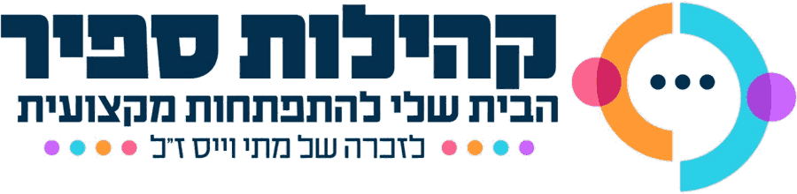

עוד אין מפגש לקשר אליו
כשהמפגש יתקרב, הקישור הזה יוביל אתכם ישירות לחדר המפגש (זום או מיט).
שמרו אותו – הוא יישאר אותו קישור לאורך כל השנה.

כשהמפגש יתקרב, הקישור הזה יוביל אתכם ישירות לחדר המפגש (זום או מיט).
שמרו אותו – הוא יישאר אותו קישור לאורך כל השנה.